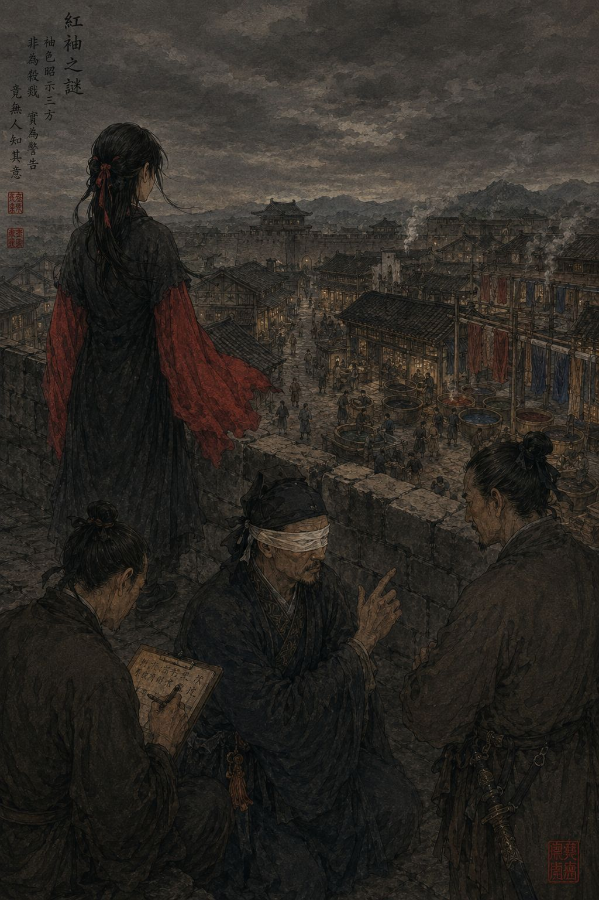

Дело о красных рукавах

В южных округах Тан люди больше доверяют цветам, чем словам. Старые женщины выбирают цвет похоронных лент раньше, чем начинают плакать, чиновники в дни неудачных переговоров надевают темное, а торговцы шелком по оттенку ткани определяют, из какой провинции прибыл покупатель. Мне об этом рассказывали с детства, и я привык считать цвет чем-то вроде чужого языка, на котором говорят все вокруг.
Поэтому, когда в городе Линьань начались убийства, а на городской стене стала появляться немая девушка в красных рукавах, жители очень быстро связали одно с другим.
Нас вызвали после третьей смерти. Первым погиб ночной сборщик налогов. Через пять дней нашли задушенным хозяина рисовых складов. Еще через неделю у северного канала зарезали старого лекаря. Все трое жили в северной части города. И всякий раз люди вспоминали одно и то же: за день до смерти немая девушка поднималась на стену в одежде с ярко-красными рукавами.
После первого убийства это сочли совпадением, после второго дурным знаком. После третьего в городе начался страх.
Когда мы прибыли в Линьань, на воротах уже шуршали под ветром бумажные талисманы от злых духов. Со мной, как обычно, были немой писец Цзянь и глухой страж Ло.
Местный судья встретил нас с явным облегчением.
— Люди требуют казни, — сказал он. — Если девчонка невиновна, то кто предупреждает убийцу?
Я попросил рассказать о девушке.
— Сирота. Родилась немой. Живет возле красильщиков. На стену приходит каждый день, и рукава у нее всякий раз другого цвета. Но перед каждой смертью она надевала красное.
— Она знала убитых?
— Никто не видел, чтобы она с ними разговаривала.
Он сам услышал, как это прозвучало, и неловко кашлянул.
Сначала следовало исполнить цзянь, наблюдение. Мы поднялись на северную стену ближе к вечеру. Ветер тянул с реки запах тины и мокрого дерева.
— Она здесь, — сказал Ло. — Очень худая. Платье старое, темное, рукава длинные и пришиты отдельно. Сегодня они красные. Смотрит вниз, на улицу красильщиков.
Он подошел к ней первым. Я услышал, как девушка отступила на шаг и остановилась.
— Какое у нее лицо? — спросил я.
— Испуганное. И усталое. На сообщницу убийцы она не похожа. Она похожа на человека, который давно не спит.
Цзянь тем временем что-то рассматривал вблизи. Потом он тронул меня за плечо и вложил в ладонь лоскут. Шелк был грубым и пах речной водой и уксусом. Следом я получил пластинку: «Рукава крашены вчера. Краска мастерских».
Я повернулся на звук ее дыхания.
— Почему ты надеваешь красное перед убийствами?
Зашуршала ткань. Ло следил за ее руками и пересказывал:
— Мотает головой. Показывает вниз, на красильный квартал. На ворота большой мастерской. Теперь на свои рукава. Опять на ворота.
Если бы девушка подавала знаки убийце, ей незачем было бы показывать нам, откуда эти знаки берутся.
В тот вечер мы обошли дома убитых. Общего между ними почти не нашлось: один собирал налоги, второй торговал рисом, третий лечил людей. Они были разного возраста и положения и едва знали друг друга. Но одно совпадение все же отыскалось. Каждый из троих незадолго до смерти побывал в красильном квартале.
Тогда началось сы, осмысление.
Наутро я велел отвести меня к красильщикам. Там стоял тяжелый запах уксуса, мокрой ткани и речной глины. Люди работали молча, и между домами разносились только плеск воды и удары вальков.
Я спросил у старика, полоскавшего холст, как в мастерских метят товар. Он объяснил охотно, потому что вопрос был простой. Тюки, которые развозят по городу, перевязывают цветной лентой, чтобы возчики не путали дороги: красная означает северные кварталы, белая восточные, синяя западные. Ленту с вечера вывешивают на воротах мастерской, и возчик знает, куда поедет завтра.
— И давно на воротах висела красная?
— Три раза за месяц, господин. А товара на север в те дни не возили. Мы еще удивлялись.
Ло тронул меня за локоть.
— Девушка опять на стене, — сказал он. — Рукава синие.
Цзянь уже вырезал на пластинке: «На воротах с вечера синяя лента».
В западных кварталах жил городской переписчик. Старик с холстом припомнил, что две недели назад тот требовал у мастерских ведомости о закупке красок. Я велел Ло бежать туда и не ждать нас.
Он успел. Переписчик был жив, а во дворе его дома прятался человек с ножом. Ло схватил его раньше, чем тот перелез через стену.
На допросе убийца запирался недолго. Он работал на владельца красильных мастерских. Тот несколько месяцев подмешивал в краску дешевую ядовитую соль и избавлялся от людей, которые могли донести об этом властям. Сборщик налогов нашел поддельные счета. Хозяин рисовых складов купил ткань для семьи и заболел сам. Старый лекарь догадался, отчего слепнут и кашляют кровью работники красилен. Имя следующего хозяин называл наемнику заранее, а день и часть города указывал лентой на воротах, чтобы не встречаться с ним лишний раз.
Немая девушка оказалась дочерью красильщика, умершего от той же краски. Она жила напротив мастерских и однажды ночью видела, как наемник выходит из ворот. Он тоже ее заметил, но трогать не стал, решив, что немая сирота никому ничего не расскажет. А девушка стала следить за воротами. Она первой поняла, что лента появляется в дни, когда товар не возят, и что наутро в той части города кого-то находят мертвым.
Писать она не умела. Ее жестов в городе никто не понимал. Тогда она стала красить рукава в цвет ленты и выходить на стену, где ее видел весь Линьань. Это был единственный способ предупредить людей, который у нее оставался. Город увидел в ее одежде угрозу.
На следующий день настало дуань, решение. Владельца мастерских арестовали вместе с убийцей, а красильный квартал судья приказал закрыть до проверки красок. Девушку отпустили.
Когда мы покидали Линьань, Ло сказал, что она снова стоит на стене и рукава у нее серые.
Я повернулся к Цзяню.
— Что означает серый?
Он долго не отвечал. Потом я получил пластинку с двумя знаками: «Не знаю».
Мы ехали молча. Я думал о том, что говорящие люди уверены, будто речь существует для того, чтобы делать мысли понятными. Девушка из Линьаня сумела сказать городу все необходимое, не произнеся ни слова, и город ее не понял. Беда была совсем не в ее немоте. Остальные слишком быстро решили, что уже знают, о чем она молчит.